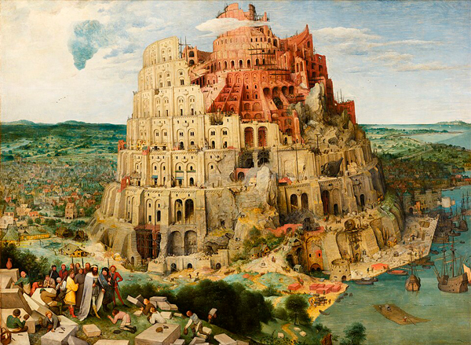
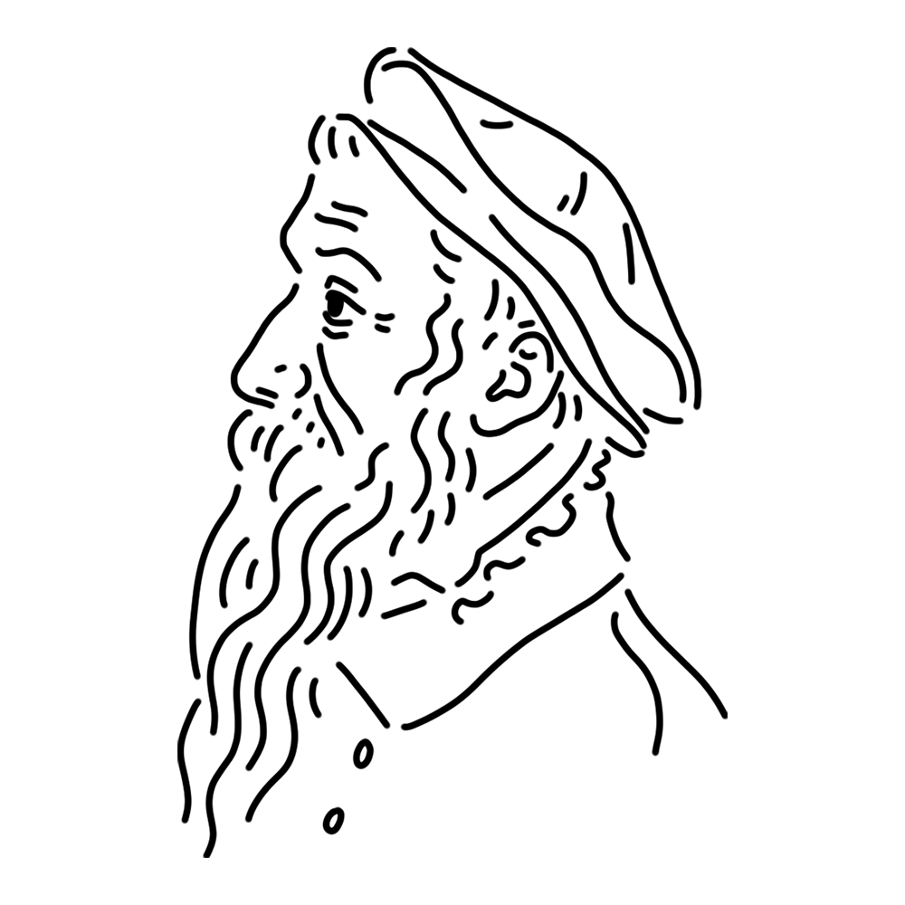

フランドル黄金時代を支えたミューズ一族の長。とてもフレンドリーなミューズで、人と話すのが大好き。よく身分を隠して町を練り歩き人々と遊んでいる。その作品も多くが農民たちを描いたものだ。
ブラバント公国（現ベルギー、オランダ）
"ネーデルラントの諺"
"バベルの塔"
"雪中の狩人" etc.

旧約聖書のエピソードに基づく作品。かつて地上の人々は皆、同じ言葉を話していたという。彼らは卓越した技術と強い結束力によって天に届く塔を築こうとしたが、その試みは神の怒りに触れてしまう。神は人々の言葉を乱し、互いに意思疎通ができなくなった人々は、やがて塔の建設を断念した。本作はその建設現場を描いたもので、細かく描かれた人々の仕草には、まさにブリューゲルらしい観察眼がうかがえる。
制作年
1563年頃
技法・材質
油彩、板
寸法
114 cm x 155 cm
所蔵
美術史美術館（オーストリア）

16世紀ネーデルラント（現在のベルギー周辺）で活躍した画家。農民たちと親しく交わり、その暮らしを生き生きと描いたことから「農民ブリューゲル」と呼ばれる。四季の風景や村の祝祭、農民の風習を克明に描いた作品は、当時の社会や生活を計り知る歴史資料としても大変貴重である。ブリューゲル一族は多くの画家を輩出した名門であり、同名の画家の子孫と区別するため「ブリューゲル（父）」と呼ばれることが多い。
Pieter Bruegel the Elder
1525年 - 1530年頃
1569年9月9日(???歳没)